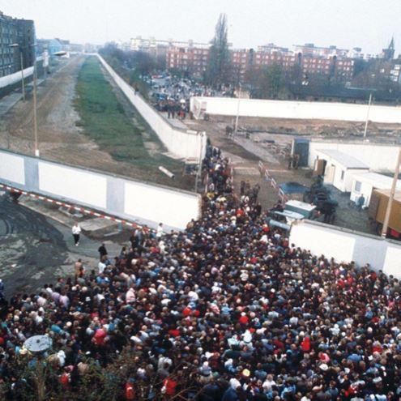
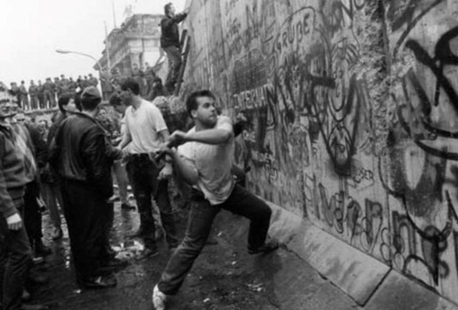
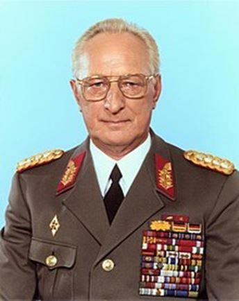
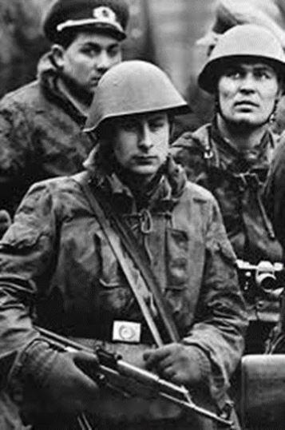
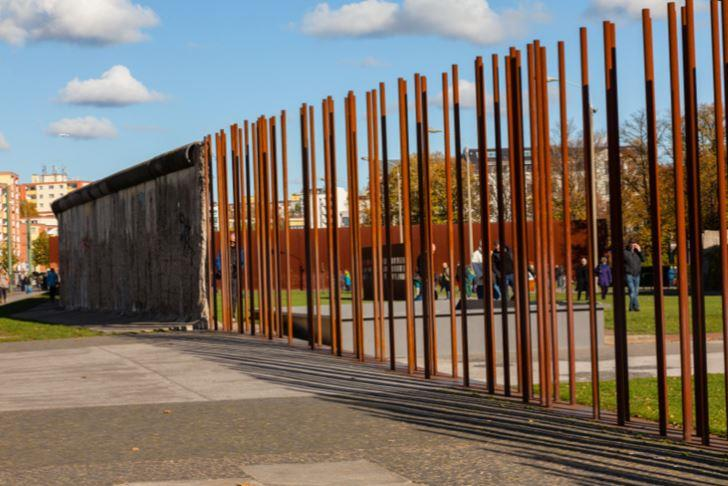

Confronté depuis des mois aux manifestations populaires, contre l'immobilisme de la SED, c’est à la surprise générale que Günther Schabowski1, le tout nouveau porte-parole du Politbüro, annonce au cours d'une conférence de presse une information qui bouleverse tous les calculs politiques d’alors et dont les conséquences, catastrophiques pour le régime, surprennent tout le monde.
Interpellé par un journaliste l’interrogeant sur les possibilités pour les citoyens de la RDA de se rendre à l’Ouest, et devant un parterre ébahi, Schabowski donne la réponse suivante retransmise le soir du 9 novembre 1989 en direct à la télévision et à la radio Est-allemandes :
« Les voyages vers l'étranger à titre personnel peuvent être entrepris sans conditions. Les autorisations seront données dans de brefs délais. Les services compétents de la Volkspolizei ont pour ordre d'accorder immédiatement les autorisations de quitter le territoire, sans que les conditions pour une sortie du pays soient remplies. (...) Les sorties permanentes du pays sont possibles à tous les points de passage de la RDA vers la RFA comme vers Berlin-Ouest. »
Dans les heures qui suivent, ce communiqué spectaculaire provoque la ruée de plusieurs dizaines de milliers de Berlinois de l'Est en direction du Mur de Berlin2, cette soudaine et massive affluence conduit de nombreux Allemands de l’Est comme de l’Ouest, armés de masses et de pioches, à s’attaquer au fondement du Mur de Berlin. Ces images font le tour du monde et restent gravées dans la mémoire collective européenne.
Mais toute la population est-allemande ne partage pas l’euphorie du moment. Une partie non négligeable des citoyens de la RDA et leurs familles croient encore dans le socialisme et sont hermétiques aux messages d’ouverture de Gorbatchev. Ils sont pétrifiés par l’annonce de l’ouverture de la frontière commune avec la RFA, sans contrôle et sans condition, d’autant plus que pour beaucoup d’Allemands de l’Est l’autre Allemagne… c’est l’étranger !
Médusés, les caciques du Politbüro3, comme du haut commandement de la NVA, se trouvent dans l’incapacité totale de gérer cette nouvelle situation. Ce ne sera qu’au lendemain du 9 novembre que les dirigeants du régime s’agitent pour tenter de trouver une solution militaire à une situation qui leur échappe pour le moment et à laquelle même la Stasi ne s’attendait pas !
Vers une Intervention armée ?
Les dirigeants politiques et les généraux sont convoqués à des réunions d’urgence. Heinz Kessler, ministre de la Défense d’alors et également membre du Bureau politique du Comité central du SED, réunit quinze des plus importants généraux de la NVA afin de sonder leurs intentions et connaitre leur opinion sur la faisabilité d’une intervention des troupes d’élites de la NVA à Berlin pour tenter de sauver le régime.
Cependant le général Kessler voit l’incompréhension se dessiner sur les visages de ses généraux et tente de ressaisir tout le monde. Pour Streletz, n° 2 de l’état-major général de la NVA, les déclarations inconsidérées du secrétaire d’État Schabowski auraient pu déclencher un bain de sang.
En effet, les gardes-frontières n’avaient pas été informé de la décision prise par celui-ci et avaient toujours pour consigne stricte de tirer sur quiconque tenterait de franchir la frontière par la force.
Heureusement que devant la masse imposante des citoyens est-allemands, se présentant aux postes frontaliers, comparés aux effectifs restreints des gardes-frontières en place, il était vain de tenter de contenir une foule aussi nombreuse et pacifique. Dans cette situation difficile, les troupes frontalières à Berlin attendaient des instructions du MfNV qui ne viendront jamais.
Pendant ces jours incertains, insouciant et heureux, le peuple Est-allemand s’initie aux joies du mode de vie capitaliste en écumant et vidant les magasins de Berlin Ouest. Egon Krenz4 alors tente de reprendre l’initiative en créant le 10 novembre 1989 un « groupe de commandement opérationnel ».
Sous les ordres du général Streletz, ce groupe se compose à égalité de trois membres de la Stasi, des troupes frontalières, du ministère de l’Intérieur ainsi que de membres du Comité central du Parti et du Conseil des ministres. Notons au passage qu’Egon Krenz est sous le coup d’une forte pression de la part des autorités soviétiques qui, tout aussi surprises, lui ordonne de gérer cette crise au plus vite. Néanmoins, ordre est donné par Gorbatchev aux unités soviétiques présentes en RDA de rester dans leur caserne l’arme au pied. En aucun cas elles de doivent intervenir dans une affaire, que le Kremlin considère dès lors comme une question de la politique intérieure purement allemande !
Pressé de toute part, Krenz prend l’initiative étonnante de mettre deux unités d’élite, la 1ère division d’infanterie motorisé5 et le régiment parachutiste n° 406, en alerte opérationnelle élevée. Cette mise en alerte est décrétée pour la « Défense de la souveraineté des frontières de la RDA et de la souveraineté de la RDA ».
Cette décision montre l’anxiété et le trouble auquel se trouvent confrontés les poncifs du SED. L’utilisation de ce niveau d’alerte montre aussi la fébrilité du dirigeant de la RDA. Ce degré très élevé de mobilisation militaire n’a été mise en œuvre que quatre fois dans l’histoire de la RDA : en 1961 lors de la construction du Mur de Berlin, en 1962 lors de la crise de Cuba, en 1968 durant le mouvement contestataire en Tchécoslovaquie et en 1980 lors de la crise polonaise.
C’est promptement, et avec la discipline qui caractérise la NVA, que les ordres de préparation à une intervention militaire sont transmis aux deux unités, avec néanmoins comme restriction absolue l’utilisation de blindés ou tout autre matériel de guerre lourd. Par conséquent, seuls des véhicules blindés légers sont autorisés et les soldats sont uniquement équipés de leur armement individuel.
Loin de s’imaginer que des troupes soient prêtes à être engagées militairement, une marée humaine de plusieurs centaines de milliers de citoyens Est-allemands continuent de déferler pacifiquement vers Berlin-Ouest pour faire des courses et s’approvisionner en produits exotiques.
Autant la situation est apaisée du côté des civils autant elle est inquiétante du côté du commandement militaire. Impatient de s’assurer le soutien de ses généraux ; Kessler prend contact avec le commandant en chef des forces terrestres de la NVA qui se montre peu amène à engager son armée contre le peuple.
Les citoyens Est-allemands ont été plus rapides, cette liesse populaire et la publicité planétaire de l’évènement sont d’une telle ampleur que la majorité des généraux rejettent catégoriquement une quelconque intervention militaire. Devant l’inutilité d’un engagement militaire, la fin de l’état d’alerte est ordonnée le 11 novembre à 14 h 00 et le 17 novembre Kessler se retire des affaires et abandonne toutes ses fonctions politiques.
Le chemin vers la réunification
À l’issue de cette révolution pacifique, la Chambre du Peuple de la RDA élit le 13 novembre 1989 Hans Modrow au poste de secrétaire général de la SED, en remplacement d’Egon Krenz. Le 18 novembre 1989, l’amiral Theodor Hoffmann est nommé nouveau ministre de la Défense et engage dès sa prise de fonction un certain nombre de réformes dont l’une a pour conséquence de dissocier définitivement la direction politique du SED de la direction militaire de la NVA.
Hans Modrow et Helmut Kohl
La création d‘une commission pour la réforme militaire de la RDA, quant à elle, a pour but de traiter des affaires générales touchant au désarmement, aux alliances militaires et sur le rôle que la NVA et supposée jouer en Europe dans l’avenir.
Le 28 novembre 1989, le chancelier de la RFA Helmut Kohl présente son Plan en dix points. Le 1er décembre 1989, la mention du rôle particulier de la SED au sein des Institutions est-allemandes est retirée de la Constitution, ce qui ouvrant ainsi la voie au pluralisme et aux élections libres.
Le 7 décembre 1989, Modrow constitue un gouvernement de coalition, avec comme vice-premier ministre en charge des Questions religieuses Lothar de Maizière, nouveau dirigeant de la CDU de l’Est et dès la mi-décembre 1989, des discussions régulières ont lieu avec les nouveaux groupes d’opposition, les mouvements civiques et les Églises au sein d’une « Table ronde. » qui aboutiront quelques mois plus tard à la Réunification allemande le 1er octobre 1990.
Martin K., incorporés dans la NVA en 1988, est fils d’un membre de l’opposition au Régime7et se trouvait en détention lors de la chute du Mur… dont il sera informé bien plus tard !
« Nous étions une vingtaine de détenus dans une cellule prévue pour deux personnes. D’octobre à décembre. Il y avait une interdiction de contact vers l’extérieur. Nous ne savions rien. Ainsi je n’ai rien su de la chute du Mur. À l’époque j’avais 19 ans. (…) j’étais dans la NVA, en octobre 1988 j’ai été incorporé. Je ne voulais pas, mais je n’avais pas trop le choix. Ce n’est qu’après avoir fait mon service dans la NVA que j’aurai pu débuter mes études de musiques. Je m’étais dit à l’époque : je fais cette année et demi, je vais bien y arriver. (…) Le 7 octobre avait eu lieu les grandes commémorations pour le 40e anniversaire de la RDA, où des manifestations bruyantes avaient lieu aux abords. Dans la nuit du 8 octobre, on m’a tiré du lit dans la caserne et mis en détention, avec d’autres jeunes hommes. Nous ne savions rien – il n’y a pas eu de mandat d’arrêt, pas d’audition. Nous avons été en garde à vue durant presque trois mois. Il semble que « les personnes considérées comme des éléments dangereux ont été filtrés. Durant ces journées nous n’entendions que le bruit des blindés et des soldats qui s’entrainaient avec matraques et boucliers. Weissenfels (ville de détention) avait Leipzig dans son ressort de responsabilité, c’est là qu’ont eu lieu les grandes manifestations. (…) Juste avant Noël, le 19 ou 20 décembre., le mot d’ordre était : NVA dans l’économie populaire ! Partout Il manquait du monde, qui ne se présentait plus au travail car il se trouvait tout d’un coup à l’Ouest. Nous devions les remplacer. Nous avons aussitôt quitté la détention et furent embarqués dans des poids-lourds. J’arrivais dans l’usine de cigarette F6 à Halle et devrait travailler à la chaine. Le peu d’ouvriers encore présents, me révèlent durant le déjeuner : Il n’y a plus de mur, depuis un mois déjà ».
Berlin aujourd’hui
Qu’ont fait les Berlinois de leur ville depuis 1989 ? 30 ans après, Berlin n’est plus une ville fortifiée mais une capitale internationale ouverte sur le monde. Pour découvrir ce changement de leurs propres yeux, des millions de visiteurs se sont déjà rendus dans la nouvelle capitale de l’Allemagne réunifiée.
Berlin est aujourd’hui devenu, un lieu de création, une métropole au style de vie unique et un endroit historique. La chute du Mur a laissé de nombreux espaces inutilisés dans le paysage urbain et on trouve encore des traces du Mur, de ses vestiges et de ses sites mémoriaux.
La ville de Berlin s’est rapidement accaparée de l’engouement pour cette période historique. Aussi il existe entre autres, le célèbre circuit du Mur de Berlin marqué le long de certaines rues de Berlin par une double rangée de pavés. Pour les adeptes du vélo la ville propose une excellente façon de retracer la route du Mur par la route qui traverse la ville en suivant le chemin du Mur de Berlin. L’ensemble du circuit couvre plus de 160 kilomètres le long de l’ancienne frontière de la RDA encerclant Berlin-Ouest.

Mémorial du Mur de Berlin
Le mémorial du Mur de Berlin rappelle la division allemande et transmet une impression oppressante du Mur et de la période de la division allemande. Contre l'ancienne ligne de démarcation de la Bernauer Straße se dresse un morceau du Mur de Berlin et un mirador. Le site montre comment les dispositifs frontaliers étaient construits et donne au visiteur une vision durable de la construction qui divisait jadis tout le pays.
Depuis 2009, Le centre des visiteurs est le premier point de départ pour les visiteurs et leur propose des informations et des aides à l'orientation sur ce site étendu. L'exposition évocatrice du centre de documentation retrace l'histoire de la construction du Mur de Berlin en 1961 et la situation de la ville divisée.
La tour offre une vue impressionnante des vestiges conservés de la frontière et le mémorial de la division de la ville et des victimes de la tyrannie communiste. L'exposition « Gares frontalières et fantômes dans Berlin divisé » de la gare Nord du S-bahn montre un chapitre particulièrement absurde de l'histoire de la ville divisée. Quelques lignes de métro et de S-Bahn passaient sous le territoire de la RDA. Les gares du côté est-allemand où il était interdit de s'arrêter, furent murées et abandonnées. Les trains provenant de Berlin-Ouest traversaient ces gares mortes, dénommées gares-fantômes.
Des visites de groupe et un vaste programme de séminaires de formation politique complètent l'offre comme la visite du mémorial du Mur de Berlin. Aménagé et agrandi pour accueillir une exposition extérieure sur l'ancien tracé du Mur du côté sud de la Bernauer Straße il s’étend sur une zone de 1,3 km de long et 4,4 ha de superficie, on intègre les segments conservés du Mur et l'exposition commémore les événements dramatiques de la Bernauer Straße.
Pour toutes ces raisons le Berlin de 2019 mérite une visite !
A.W.
1 Günter Schabowski, né le 4 janvier 1929 à Anklam en Poméranie et mort le 1er novembre 20151 à Berlin, est un journaliste et homme politique allemand. Il a été membre du Politbüro du Comité central du Parti socialiste unifié d'Allemagne (SED), le parti dirigeant de la RDA.
2 En une semaine ce ne seront pas moins de 9 millions d’Allemands de l’Est qui se rendront en visite à l’Ouest !
3 Le Politburo en forme longue définissait sa ligne directrice, et déterminait les politiques suivies par la RDA. La fonction de Secrétaire général du Comité central, chargé de coordonner les activités du Politburo.
Le Secrétaire général était le principal de la RDA.
4 Egon Krenz est une personnalité politique est-allemande, né le 19 mars 1937 à Kolberg aujourd'hui Kołobrzeg, en Pologne. Il fut le dernier secrétaire général du Parti socialiste unifié d'Allemagne (SED).
5 En cas de guerre, la création d'un "groupe spécial Berlin" était prévue pour la mise en place du "Centre d'opérations". "Centre d'opérations" (également dénommé "Opération Stoß" ou "Centre d'opérations") était le nom donné à la capture prévue de Berlin-Ouest. La 1re division d’infanterie motorisés faisait partie - avec d'autres unités de la NVA, des groupes de combat de la classe ouvrière, des troupes frontalières de la RDA et de l'état de préparation du Pacte de Varsovie - du Groupe spécial de Berlin. La force totale du groupe était d'environ 32 000 hommes. Elle était équipée u. a. avec 400 chars, 400 transports de troupes blindés et 450 fusils et lance-grenades. Les exercices du groupement ont été menés dans le plus strict secret.
6 Le Luftsturmregiment 40 (LStR-40) "Willi Sänger" était une unité de l'Armée populaire nationale de la République démocratique allemande. Il a été créé en 1986 en développant le bataillon de parachutistes 40 existant avec des compagnies d'assaut aériennes supplémentaires et une capacité de soutien supplémentaire. Il était directement subordonné au commandement des forces terrestres de l'armée est-allemande. Bien qu'initialement formée sur le bataillon de parachutistes, cette unité avait une mission et une organisation différentes. Le régiment d'assaut aérien 40 a été créé à la suite d'un changement de tactique soviétique fondé sur l'expérience récente acquise en Afghanistan. Ces tactiques mettaient l'accent sur la guerre plus mobile offerte par le recours aux opérations d'assaut aérien par hélicoptère. Ainsi, alors que le LStR 40 conservait intégralement les capacités de son prédécesseur en vol, son insistance sur l’aptitude à mener des opérations d’assaut aérien étant plus importante qu’auparavant. Comme son prédécesseur, le Luftsturmregiment 40 portait le titre supplémentaire de "Willi Sänger", en l'honneur d'un célèbre communiste allemand, combattant de la résistance contre les nazis.
7 Interview “Ein Gespräch über die DDR – 25 Jahre danach”, Berliner Morgenpost.
Partager cette page